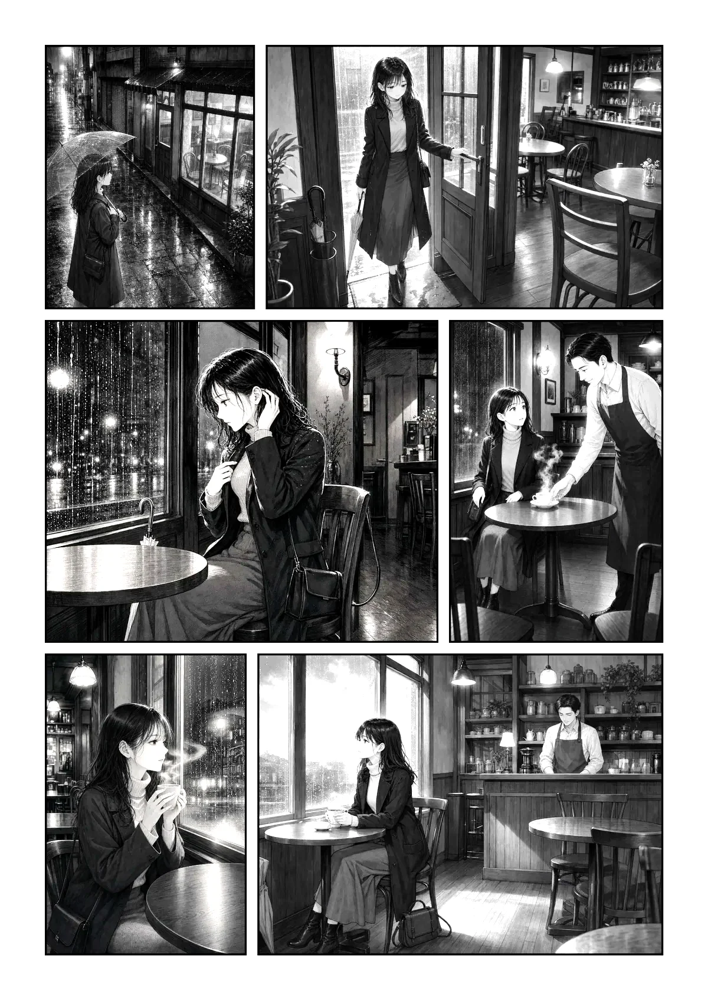

Manga Tint formerly Colored Glasses (色めがね)
Make black-and-white manga feel softer.
Choose a soft gradient and apply it instantly in your browser. Manga Tint changes how grayscale pages are displayed without modifying the original artwork.
A tiny browser extension. Pick a tint. Read in a softer tone.
Try the difference yourself.
Pick a tint and drag the slider to compare.

Original TintedThese are the actual gradients used in the extension.
How it works
-
Pick a gradient
Choose a tint from the simple color panel.
-
Apply instantly
The filter changes the page as you view it in your browser.
-
Return anytime
Switch back to the original grayscale view with one click.
See the change in motion.
A short before-and-after demonstration will be added here.
A small tool, on purpose.
Manga Tint is a tiny browser extension for applying soft gradient colors to grayscale manga and images. Choose a tint with one click and return to the original view anytime.
- It never edits the original image — only how the page is displayed in your browser.
- It is not full colorization, and it does not use AI. It applies a preset gradient filter.
- Some websites or image viewers may prevent the filter from applying correctly.
Privacy
The visual effect is applied locally in your browser. Manga Tint does not collect or transmit any data, and does not upload the images you are viewing.
Usage note
Only publish transformed screenshots or recordings when you own the content or have permission to use it.
More details on the Colored Glasses (色めがね) guide page (previous name)
FAQ
Does Manga Tint permanently edit images?
No. It changes how the page is displayed in your browser. The original files are never modified.
Is this an AI coloring tool?
No. It applies a preset gradient filter to the displayed page. It does not analyze or understand the content.
Does it work on every website?
Not always. Some websites or image viewers may prevent the filter from working correctly.
Can I create my own palette?
No. The current version provides a fixed set of tint options.
Can I return to the original view?
Yes. Use the remove option in the extension to switch back to the original view at any time.
Read grayscale manga in a softer tone.
Simple filters. No accounts. No complicated settings.